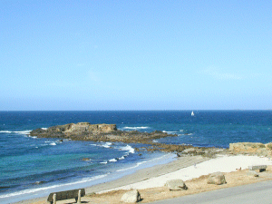
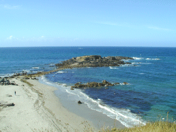

|

La deuxième plage est aussi la plus
grande.
|
Le gué qui permet d'aller à l'Ile
Percée a été recouvert d'un pont dont
il subsiste les piles.
Les allemands ont pu ainsi construire,
équiper et approvisionner une casemate conçue
pour "protéger" l'entrée de l'Aven et du
Bélon et leur base de sous-marins de Lorient.
A marée haute l'île est
isolée du continent et bien des imprudents ont
dû rentrer à la nage.
|

En arrivant à Trénez on domine la
première plage.
|